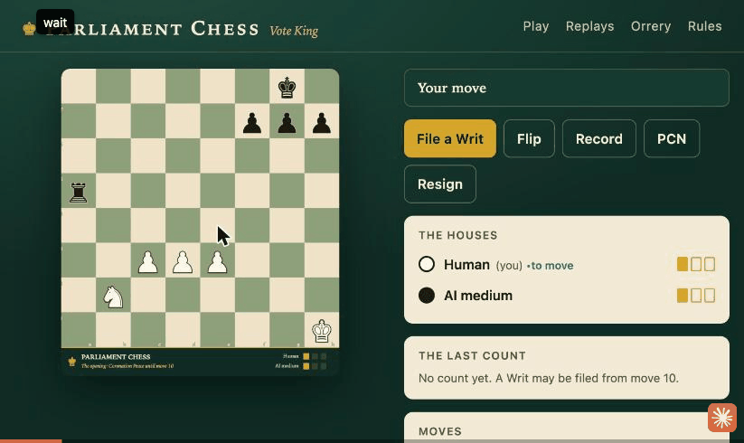

Parliament Chess
Vote King
Every move is FIDE chess. Every crown is elected. File a Writ and your own pieces vote by proximity: pawns in the Commons; Knights, Bishops and Rooks in the College. A dethroned King becomes a pawn.

How a crown changes hands
1. The Writ
From move 10, instead of moving, name a Candidate: any of your pieces except the King and the Queen, never crowned, not under attack. It costs your whole turn.
2. The campaign
Your opponent gets one move to answer: attack the Candidate's square, capture your voters, or attack them so they abstain.
3. The count
Each voter backs whichever is nearer, Candidate or King. Two chambers decide:
4. The Ledger
A dethroned King becomes a Pretender pawn that can promote only to Rook, Bishop or Knight. No piece reigns twice.
What 1,400 self-play games showed
The film
The player's guide
Who votes

Play it on your machine
git clone https://github.com/vonglurt/parliamentchess.git cd parliamentchess make up # the server in the background: http://localhost:8080 make test # 45 rule tests, and two browsers playing through the server make down # stop it
The game is a PHP 8.2+ server, so it runs locally rather than on these pages: two browsers play each other, the machine plays you as a nut, a legume or a squash, and anyone with a watch link follows along. Then open http://localhost:8080 in Chrome.